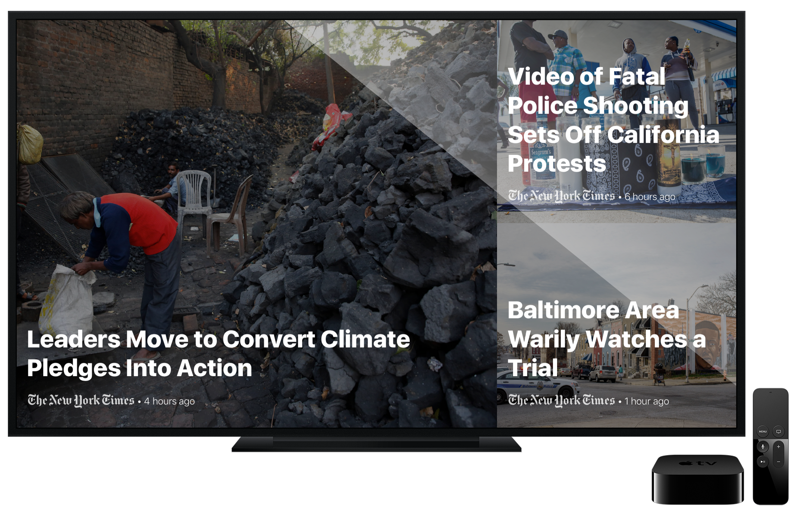
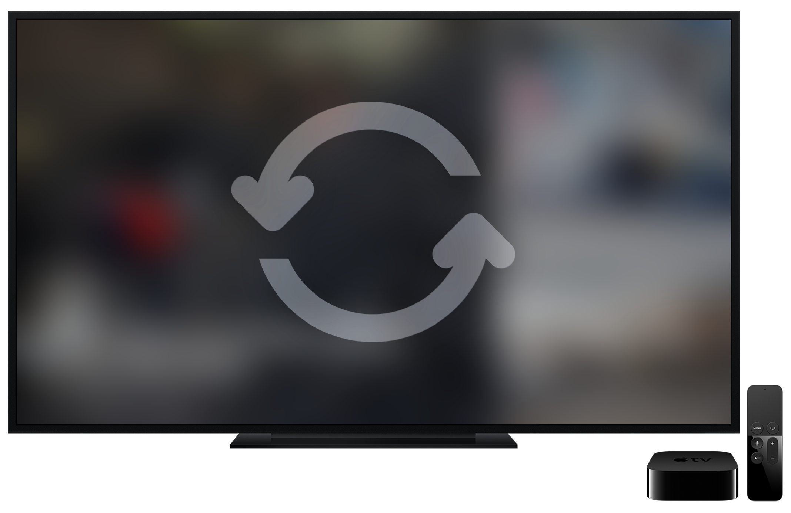
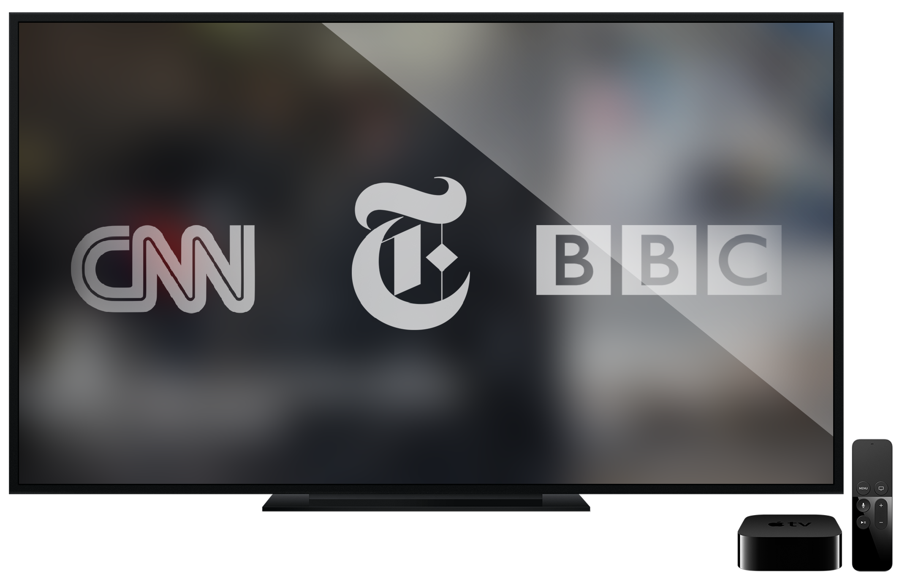

The Latest News
Monitr pulls in news from high quality sources worldwide to give you the most up view of whats going on right on your TV.

Always Updating
Monitr intelligently updates, arranges, and cycles through the newest stories worldwide to make sure you’re always seeing the latest headlines.

Just what you want
With Monitr, you can choose exactly what sources, feeds, and categories you do and don't want to see.
Get Monitr
Search "Monitr" on the Apple TV App Store.